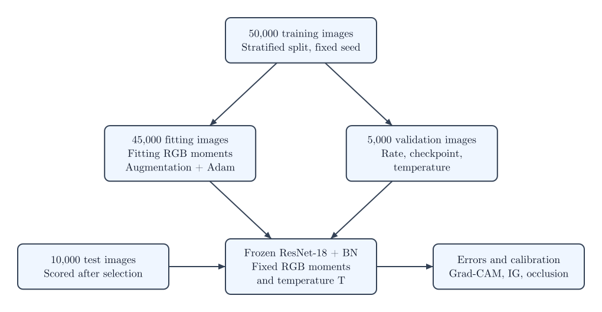
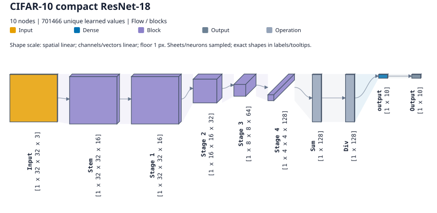
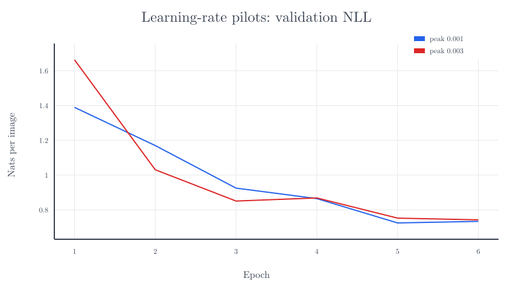
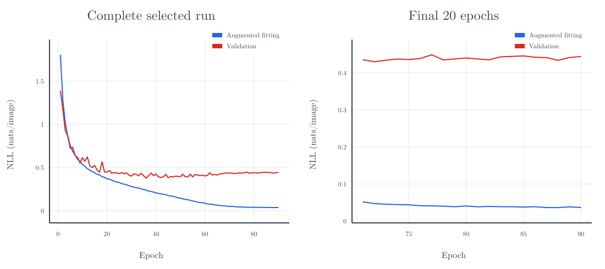

CIFAR-10: a reproducible image-classification study
Abstract
Assigning an object category to a 32-by-32 colour image requires separating object shape from background, pose and severe loss of detail. This study examines all 60,000 CIFAR-10 images, trains a compact residual network from scratch on a fixed fitting partition, and evaluates the selected model on the complete official test set. It reports learning-rate selection, an explicit convergence check, uncertainty, class-specific errors and reproducible examples. Gradient explanations are checked numerically and compared with finite occlusions and a randomised-head control. All reported numbers are computed locally; trained weights, split IDs, logits and numerical explanation arrays accompany the report.
Scope and study design
The target is the original ten-class CIFAR-10 task: one image in, one of ten mutually exclusive labels out. The objective is a sufficient, interpretable and reproducible classifier rather than a leaderboard claim. The chosen network retains all eight basic residual blocks of ResNet-18, with narrower channels and a small-image stem. It uses no pretrained weights, external images, ensembling or test-time augmentation.
All selection uses the official training partition. A seeded, exactly stratified split supplies 45,000 fitting images and 5,000 validation images. The validation partition chooses the learning rate and checkpoint, then fits one probability temperature. The 10,000 official test images are scored after these decisions are frozen. Because the same validation set serves these three purposes, its final score is a selection diagnostic, not an unbiased generalisation estimate.
The concept diagram below is drawn by dm::graphics::Diagram. Its editable C++
source is the complete block below; regeneration uses the same datamunge
toolchain as the numerical examples. Exports consume the saved local SVG.
#include <dm/dm.hpp>
int main() {
std::filesystem::create_directories("build");
dm::graphics::Diagram diagram;
dm::graphics::DiagramNodeStyle blue;
auto box = blue;
box.width = 4;
diagram.node("training", {0, 3},
"50,000 training images\nStratified split, fixed seed", box).node("fit", {-3.2, 0}, "45,000 fitting images\nFitting RGB moments\nAugmentation + Adam", box).node("validation", {3.2, 0}, "5,000 validation images\nRate, checkpoint, temperature", box).node("model", {0, -3}, "Frozen ResNet-18 + BN\nFixed RGB moments\nand temperature T", box).node("test", {-5.5, -3}, "10,000 test images\nScored after selection", box).node("analysis", {5.5, -3}, "Errors and calibration\nGrad-CAM, IG, occlusion", box).edge("training", "fit").edge("training", "validation").edge("fit", "model").edge("validation", "model").edge("test", "model").edge("model", "analysis");
diagram.save_svg("build/study_design.svg");
}
Data, provenance and exploratory analysis
CIFAR-10 contains 60,000 RGB images at 32 by 32 pixels, grouped into airplane, automobile, bird, cat, deer, dog, frog, horse, ship and truck. There are 5,000 official training and 1,000 official test images per class. The five training files have a random class mix; concatenating all five is necessary for the intended training population. The original source is Krizhevsky, Nair and Hinton's dataset page, with the associated 2009 technical report, Learning Multiple Layers of Features from Tiny Images.
Acquisition uses dm::datasets::fetch("cifar10") and the shared configurable
cache. The native fetcher pins the binary archive MD5 to
c32a1d4ab5d03f1284b67883e8d87530; existing extracted caches are reused.
Therefore this study also records and checks SHA-256 fingerprints of all six
binary files in artifacts/dataset.sha256. These are fingerprints of the actual
inputs used here, not a claim that a pre-existing cache was downloaded again.
The binary reader requires complete records. Labels and class supports are
checked, and archived split IDs are verified to form a disjoint complete
partition.
RGB statistics below are computed only from fitting pixels, with Float64
population-moment reductions. The standardised input is
(pixel - fitting_mean) / fitting_sd. Validation and test data never determine
these moments.
#include <dm/dm.hpp>
int main() {
namespace n = dm::nn;
namespace s = n::study;
n::set_num_threads(8);
std::filesystem::create_directories("build");
const bool rebuilding =
std::getenv("DATAMUNGE_CIFAR10_RETRAIN") &&
std::string(std::getenv("DATAMUNGE_CIFAR10_RETRAIN")) == "1";
const auto data =
rebuilding || !std::filesystem::exists("artifacts/preprocessing.npz")
? s::prepare_cifar10()
: s::restore_cifar10_study("artifacts/preprocessing.npz");
if (rebuilding || !std::filesystem::exists("artifacts/preprocessing.npz")) {
std::filesystem::create_directories("artifacts");
n::save_npz("artifacts/preprocessing.npz",
{{"mean", data.mean}, {"sd", data.sd},
{"fit_ids", n::from_vector(data.fit_ids, {45000})},
{"validation_ids",
n::from_vector(data.validation_ids, {5000})}});
}
std::ofstream("build/dataset_directory.txt") << data.directory << '\n';
std::print("| Partition | Images | Images per class | Purpose |\n|---|---:|---:|---|\n" "| Fitting | {} | 4500 | Gradients and RGB moments |\n" "| Validation | {} | 500 | Rate, checkpoint and temperature |\n" "| Official test | 10000 | 1000 | Frozen evaluation |\n",
data.fit.labels.numel(), data.validation.labels.numel());
std::print("\n| Channel | Fitting mean | Fitting population SD |\n|---|---:|---:|\n");
for (int c = 0; c < 3; ++c)
std::print("| {} | {:.6f} | {:.6f} |\n",
std::vector<std::string>{"Red", "Green", "Blue"}[c],
data.mean.at({c}), data.sd.at({c}));
}| Partition | Images | Images per class | Purpose |
|---|---|---|---|
| Fitting | 45000 | 4500 | Gradients and RGB moments |
| Validation | 5000 | 500 | Rate, checkpoint and temperature |
| Official test | 10000 | 1000 | Frozen evaluation |
| Channel | Fitting mean | Fitting population SD |
|---|---|---|
| Red | 0.491292 | 0.246838 |
| Green | 0.482120 | 0.243305 |
| Blue | 0.446505 | 0.261456 |
set -eu
study_report_dir=$PWD
IFS= read -r study_cache <build/dataset_directory.txt
cd "$study_cache"
sha256sum -c "$study_report_dir/artifacts/dataset.sha256"data_batch_1.bin: OK data_batch_2.bin: OK data_batch_3.bin: OK data_batch_4.bin: OK data_batch_5.bin: OK test_batch.bin: OK
#include <dm/dm.hpp>
int main() {
namespace n = dm::nn;
namespace s = n::study;
n::set_num_threads(8);
std::filesystem::create_directories("build");
const auto data = s::restore_cifar10_study("artifacts/preprocessing.npz");
std::vector<int64_t> rows;
const auto y = data.fit.labels.to_vector<int64_t>();
for (int c = 0; c < 10; ++c)
for (int j = 0; j < 5; ++j) {
int seen = 0;
for (int64_t i = 0; i < static_cast<int64_t>(y.size()); ++i)
if (y[i] == c && seen++ == j) {
rows.push_back(i);
break;
}
}
n::save_image_grid(n::take_rows(data.fit.images, rows),
"build/training_examples.png", 5, 0, 1, 2, 1, 4);
std::print("Five fitting images per class; rows follow original class IDs 0 through 9.\n");
}Five fitting images per class; rows follow original class IDs 0 through 9.
#include <dm/dm.hpp>
int main() {
namespace n = dm::nn;
namespace s = n::study;
n::set_num_threads(8);
std::filesystem::create_directories("build");
const auto data = s::restore_cifar10_study("artifacts/preprocessing.npz");
const auto y = data.fit.labels.to_vector<int64_t>();
std::vector<n::Tensor> means;
for (int c = 0; c < 10; ++c) {
std::vector<int64_t> ids;
for (int64_t i = 0; i < static_cast<int64_t>(y.size()); ++i)
if (y[i] == c)
ids.push_back(i);
means.push_back(n::mean(n::take_rows(data.fit.images, ids), {0}));
}
n::save_image_grid(n::stack(means, 0), "build/class_means.png", 5, 0, 1, 2,
1, 6);
std::print("Each tile averages all 4500 fitting images from one class.\n");
}Each tile averages all 4500 fitting images from one class.
The average tiles preserve blue backgrounds for airplanes and ships, greener backgrounds in several animal classes, and a central dark vehicle region for automobiles and trucks. These are visible label-associated image patterns. They motivate checking object-versus-context sensitivity, without showing that the fitted classifier actually uses a shortcut. Individual previews also show large changes in object scale and incomplete outlines at this resolution.
Model and optimisation method
The network maps a standardised NHWC image to ten unconstrained logits. A 3-by-3 stride-one convolution produces 16 channels without an initial pooling layer. Four stages contain two basic residual blocks each, at widths 16, 32, 64 and 128. The first block of each later stage downsamples by two with a learned projection shortcut. Global average pooling feeds a biased linear classifier. Batch normalisation uses epsilon \(10^{-5}\) and retains 0.9 of each previous moving moment. Moving moments and learned parameters are checkpointed together.
This is an explicit four-stage small-image adaptation of He et al., Deep Residual Learning for Image Recognition, not the paper's three-stage CIFAR architecture. Narrowing the network gives a practical native CPU experiment while retaining the residual structure and enough capacity for this task. A best-in-class accuracy claim would require a broader architecture and augmentation comparison that this study does not perform.
For a basic block, the learnable branch is a composition of two normalised 3-by-3 convolutions, with ReLU after the first. Its output is
The fitting objective averages sparse softmax cross entropy over each minibatch and adds a kernel-only squared penalty:
Adam uses beta1 0.9, beta2 0.999 and epsilon 1e-8, with minibatches of 64. Bias and BN parameters are excluded from the explicit L2 term. Each fitting image receives an independent random crop after four-pixel raw-black padding and an independent horizontal flip with probability one half; RGB standardisation follows augmentation. Validation uses original images and frozen BN moments. There is no label smoothing, mixup, CutMix, dropout or test-time augmentation.
Two six-epoch pilots compare peak rates 0.001 and 0.003. Both reset the initial parameters, BN moments, minibatch seed and epoch-specific augmentation streams; each warms up over its first epoch. The candidate with the lowest observed validation NLL is continued from its sixth-epoch state, including Adam slots and batch-order state. Its rate follows a cosine from the selected peak at epoch 7 to 0.00001 at epoch 80. Every epoch is evaluated, and the smallest raw validation NLL retains a paired weight/BN candidate. After the plateau check, validation accuracy selects between that candidate and the converged endpoint; calibrated validation NLL breaks exact accuracy ties. The losing pilot is never evaluated on test data.
Training continues at the nonzero floor rate for ten epochs. Convergence is an operational plateau: the absolute difference between the last five-epoch mean and preceding five-epoch mean must be below 0.005 nats for both augmented fitting NLL and validation NLL. Ten-epoch extensions are allowed up to epoch 120; failure to meet the criterion makes the training program fail. This documents stability of this optimisation schedule, not global optimality or the absence of overfitting.
#include <dm/dm.hpp>
int main() {
namespace n = dm::nn;
namespace s = n::study;
n::set_num_threads(2);
std::filesystem::create_directories("build");
n::ParameterStore p(17), state(17);
const auto cfg = s::cifar10_resnet_config();
n::Module model([&](const n::Tensor & image) {
const auto out =
n::models::ResNet(p, state, image, cfg, false); auto previous =
image; n::model_stage("Stem", image, out.stem); previous =
out.stem; for (int i = 0; i < 4; ++i) {
n::model_stage("Stage " + std::to_string(i + 1), previous,
out.stages[i]); previous = out.stages[i];
}
return out.logits;
}, "CIFAR-10 compact ResNet-18");
n::ModelPlotOptions options;
options.style = n::ModelPlotStyle::Flow;
options.detail = n::ModelPlotDetail::Blocks;
options.labels = {.type = n::ModelPlotLabel::NameAndShape,.size = 12,
.wrap = 24};
options.spacing = {.layer = 24,.lane = 12,.label = 8,.margin = 20};
options.sizing.spatial_size = 96;
options.sizing.channel_size = 42;
options.sizing.minimum_extent = 1;
const auto diagram = model.plot(n::zeros({1, 32, 32, 3}), options);
diagram.save_svg("build/architecture.svg");
std::print("| Quantity | Executed value |\n|---|---:|\n| Learned scalars | {} |\n| BN moving scalars | " "{} |\n| Named plotted nodes | {} |\n",
p.count(), state.count(), diagram.nodes().size());
}| Quantity | Executed value |
|---|---|
| Learned scalars | 701466 |
| BN moving scalars | 2400 |
| Named plotted nodes | 10 |

Training implementation and convergence evidence
The following complete program contains the actual fitting loop. Normal report
builds read the retained training record. Set DATAMUNGE_CIFAR10_RETRAIN=1 to
execute both pilots and the complete convergence schedule again; this replaces
model and training artifacts. Recomputing the downstream results requires the
generated checkpoints and evaluation archives, which are not in the source
checkout. Use the stored report results when browsing without these artifacts.
Initialisation seed is 17, split seed 20261030,
batch-order seed 2026, and each augmentation epoch uses seed 151 + epoch.
Archived row IDs avoid dependence on a platform's shuffle implementation.
Measured runtime is for native Float32 CPU training on an AMD Ryzen 9 9955HX with eight datamunge threads and single-thread OpenBLAS. The NVIDIA driver was unavailable for this run. Wall time includes fitting, per-epoch validation and checkpoint writes for both pilots and the continuation; it excludes final evaluation and explanation computation.
#include <dm/dm.hpp>
int main() {
namespace n = dm::nn;
namespace s = n::study;
if (!std::getenv("DATAMUNGE_CIFAR10_RETRAIN") ||
std::string(std::getenv("DATAMUNGE_CIFAR10_RETRAIN")) != "1") {
std::ifstream saved("artifacts/fit_summary.tsv");
if (!saved)
throw std::runtime_error("run with DATAMUNGE_CIFAR10_RETRAIN=1 to train first");
std::string header;
std::getline(saved, header);
double rate, nll, dt, dv, seconds;
int epochs, selected, converged;
saved >> rate >> epochs >> selected >> nll >> dt >> dv >> converged >>
seconds;
if (!saved || converged != 1)
throw std::runtime_error("a completed converged training run is required");
std::print("| Quantity | Measured value |\n|---|---:|\n" "| Selected peak learning rate | {:.5f} |\n| Completed epochs | {} |\n" "| Lowest raw-NLL checkpoint epoch | {} |\n| Smallest raw validation NLL | {:.6f} |\n" "| Final five-epoch training change | {:.6f} |\n" "| Final five-epoch validation change | {:.6f} |\n" "| Total training time, minutes (including both pilots) | {:.2f} |\n",
rate, epochs, selected, nll, dt, dv, seconds / 60);
return 0;
}
n::set_num_threads(8);
std::filesystem::create_directories("artifacts");
std::filesystem::create_directories("build");
std::filesystem::remove("artifacts/fit_summary.tsv");
std::filesystem::remove("artifacts/training_summary.tsv");
const auto data = s::prepare_cifar10();
n::save_npz("artifacts/preprocessing.npz",
{{"mean", data.mean}, {"sd", data.sd},
{"fit_ids", n::from_vector(data.fit_ids, {45000})},
{"validation_ids", n::from_vector(data.validation_ids, {5000})}});
const auto config = s::cifar10_resnet_config();
n::ParameterStore parameters(17), state(17);
{
n::NoGradGuard guard;
n::models::ResNet(parameters, state, n::zeros({1, 32, 32, 3}), config,
false);
}
n::OptimizerConfig optimizer_config;
optimizer_config.kind = n::OptimizerKind::Adam;
n::Optimizer optimizer(parameters, .001, optimizer_config);
n::BatchOrder order(45000, 64, 2026);
auto fresh_parameters = parameters.clone(), fresh_state = state.clone();
std::ofstream tuning("artifacts/tuning.tsv"), history;
tuning <<
"peak_lr\tepoch\ttrain_aug_nll\tvalidation_nll\tvalidation_accuracy\tseconds\n";
const auto start = std::chrono::steady_clock::now();
double best = 1e9, peak = 0, chosen_peak = 0, selected_score = 1e9;
int selected_epoch = 0;
std::vector<double> train_values, validation_values;
// The explicit minibatch loop is shared by the pilot and continuation stages.
auto epoch_step = [&](int epoch, double rate, bool pilot) {
const auto tick = std::chrono::steady_clock::now();
n::Generator augmentation(151 + epoch); // Epoch-local stream permits exact continuation.
order.begin_epoch();
n::WeightedMean train;
for (auto rows = order.next(); !rows.empty(); rows = order.next()) {
const auto images =
s::augment_cifar10(n::take_rows(data.fit.images, rows),
augmentation);
const auto input =
s::standardize_cifar10(images, data.mean, data.sd);
const auto logits =
n::models::ResNet(parameters, state, input, config, true).logits;
const auto loss =
n::sparse_softmax_cross_entropy(logits,
n::take_rows(data.fit.labels,
rows));
auto objective = loss;
for (const auto &weight : parameters.parameters())
if (weight.dim() >= 2)
objective = objective + .00005 * n::sum(n::square(weight));
// Each pilot warms up for one epoch. The continuation uses an epoch-wise cosine.
const double lr =
pilot && epoch == 1
? rate * (optimizer.iterations() + 1.) /
order.batches_per_epoch() : rate;
optimizer.set_learning_rate(lr);
optimizer.minimize(objective);
train.add(loss.item(), rows.size());
}
const auto logits =
s::cifar10_logits(parameters, state, data.validation.images,
data.mean, data.sd);
const double val =
n::sparse_softmax_cross_entropy(logits, data.validation.labels).item();
const double accuracy = n::accuracy(logits, data.validation.labels);
const double seconds =
std::chrono::duration<double>(std::chrono::steady_clock::now() -
tick).count();
if (!std::isfinite(val))
throw std::runtime_error("nonfinite validation loss");
train_values.push_back(train.value());
validation_values.push_back(val);
auto &out = pilot ? tuning : history;
out << std::setprecision(12) << peak << '\t' << epoch << '\t' <<
train.value() << '\t' << val << '\t' << accuracy << '\t' <<
seconds << '\n';
out.flush();
if (val < best) {
best = val;
selected_epoch = epoch;
parameters.save("artifacts/nll_parameters.npz");
state.save("artifacts/nll_bn.npz");
}
std::cout << "lr=" << rate << " epoch=" << epoch << " train=" <<
train.value() << " val=" << val << " acc=" << accuracy <<
" seconds=" << seconds << std::endl;
};
// Two comparable full-fitting-set pilots; official test data remain unopened.
for (const double candidate : {.001, .003}) {
peak = candidate;
best = 1e9;
selected_epoch = 0;
parameters.copy_from(fresh_parameters);
state.copy_from(fresh_state);
optimizer = n::Optimizer(parameters, peak, optimizer_config);
order = n::BatchOrder(45000, 64, 2026);
train_values.clear();
validation_values.clear();
for (int epoch = 1; epoch <= 6; ++epoch)
epoch_step(epoch, peak, true);
if (best < selected_score) {
selected_score = best;
chosen_peak = peak;
n::save_training_checkpoint("build/continuation.npz", parameters,
&optimizer, &order);
state.save("build/continuation_bn.npz");
std::filesystem::copy_file("artifacts/nll_parameters.npz",
"build/pilot_best_parameters.npz",
std::filesystem::copy_options::overwrite_existing);
std::filesystem::copy_file("artifacts/nll_bn.npz",
"build/pilot_best_bn.npz",
std::filesystem::copy_options::overwrite_existing);
n::save_npz("build/pilot_history.npz",
{{"train", n::from_vector(train_values, {6})},
{"validation", n::from_vector(validation_values, {6})},
{"best_epoch",
n::scalar(selected_epoch, n::DType::Int64)}});
}
}
peak = chosen_peak;
best = selected_score;
n::load_training_checkpoint("build/continuation.npz", parameters,
&optimizer, &order);
state.load("build/continuation_bn.npz");
std::filesystem::copy_file("build/pilot_best_parameters.npz",
"artifacts/nll_parameters.npz",
std::filesystem::copy_options::overwrite_existing);
std::filesystem::copy_file("build/pilot_best_bn.npz",
"artifacts/nll_bn.npz",
std::filesystem::copy_options::overwrite_existing);
for (const auto & [key, value] : n::load_npz("build/pilot_history.npz")) {
if (key == "train")
train_values = value.to_vector<double>();
if (key == "validation")
validation_values = value.to_vector<double>();
if (key == "best_epoch")
selected_epoch = value.item<int>();
}
history.open("artifacts/history.tsv");
history <<
"peak_lr\tepoch\ttrain_aug_nll\tvalidation_nll\tvalidation_accuracy\tseconds\n";
// Preserve the chosen pilot's actual measurements rather than rerunning it.
tuning.close();
std::ifstream pilot("artifacts/tuning.tsv");
std::string line;
std::getline(pilot, line);
while (std::getline(pilot, line)) {
std::istringstream row(line);
double candidate;
row >> candidate;
if (candidate == peak)
history << line << '\n';
}
int completed = 6;
for (int epoch = 7; epoch <= 80; ++epoch) {
const double lr = n::schedule::cosine(peak, .00001, 73, epoch - 7);
epoch_step(epoch, lr, false);
completed = epoch;
}
// A nonzero-rate plateau check prevents declaring convergence just because LR reached zero.
bool converged = false;
double train_change = 0, val_change = 0;
for (int extension = 0; extension < 4 && !converged; ++extension) {
for (int i = 0; i < 10; ++i) {
++completed;
epoch_step(completed, .00001, false);
}
auto window = [](const std::vector<double> & x, int offset) {
return std::accumulate(x.end() - offset - 5, x.end() - offset, 0.) /
5.;
};
train_change =
std::abs(window(train_values, 0) - window(train_values, 5));
val_change =
std::abs(window(validation_values, 0) - window(validation_values, 5));
converged = train_change < .005 && val_change < .005;
}
parameters.save("artifacts/converged_parameters.npz");
state.save("artifacts/converged_bn.npz");
const double seconds =
std::chrono::duration<double>(std::chrono::steady_clock::now() - start).count();
std::ofstream summary("artifacts/fit_summary.tsv");
summary <<
"peak_lr\tcompleted_epochs\tselected_epoch\tvalidation_nll\tplateau_train_" "change\tplateau_validation_change\tconverged\tseconds\n" <<
std::setprecision(12) << peak << '\t' << completed << '\t' <<
selected_epoch << '\t' << best << '\t' << train_change << '\t' <<
val_change << '\t' << converged << '\t' << seconds << '\n';
if (!converged)
throw std::runtime_error("plateau criterion not reached; extend training before finalising report");
std::cout << "Converged; retained raw-NLL minimum at epoch " <<
selected_epoch << " validation NLL " << best << std::endl;
}| Quantity | Measured value |
|---|---|
| Selected peak learning rate | 0.00100 |
| Completed epochs | 90 |
| Lowest raw-NLL checkpoint epoch | 36 |
| Smallest raw validation NLL | 0.377643 |
| Final five-epoch training change | 0.001352 |
| Final five-epoch validation change | 0.000706 |
| Total training time, minutes (including both pilots) | 50.93 |
#include <dm/dm.hpp>
int main() {
std::filesystem::create_directories("build");
auto plot = dm::graphics::RPlot::create();
std::ifstream input("artifacts/tuning.tsv");
std::string line;
std::getline(input, line);
std::map<double, std::pair<std::vector<double>, std::vector<double>> > series;
while (std::getline(input, line)) {
std::istringstream r(line);
double lr, e, tr, val, acc, seconds;
r >> lr >> e >> tr >> val >> acc >> seconds;
series[lr].first.push_back(e);
series[lr].second.push_back(val);
}
int i = 0;
for (const auto & [lr, xy] : series)
plot.line(xy.first, xy.second, std::format("peak {:.3f}", lr),
i++ ? dm::RGB{220, 38, 38} : dm::RGB{37, 99, 235});
plot.title("Learning-rate pilots: validation NLL").x_label("Epoch").y_label(
"Nats per image").size(850, 480).save_svg("build/tuning.svg");
std::print("Both candidates use all fitting rows and the same random seeds.\n");
}Both candidates use all fitting rows and the same random seeds.

#include <dm/dm.hpp>
int main() {
std::filesystem::create_directories("build");
std::vector<double> epoch, train, val;
std::ifstream input("artifacts/history.tsv");
std::string line;
std::getline(input, line);
while (std::getline(input, line)) {
std::istringstream r(line);
double lr, e, t, v, a, s;
r >> lr >> e >> t >> v >> a >> s;
epoch.push_back(e);
train.push_back(t);
val.push_back(v);
}
auto all =
dm::graphics::RPlot::create(), tail = dm::graphics::RPlot::create();
all.line(epoch, train, "Augmented fitting", {37, 99, 235}).line(
epoch, val, "Validation", {220, 38, 38}).title("Complete selected run").x_label("Epoch").y_label("NLL (nats/image)");
const auto k = epoch.size() > 20 ? epoch.size() - 20 : 0;
tail.line({epoch.begin() + k, epoch.end()},
{train.begin() + k, train.end()}, "Augmented fitting",
{37, 99, 235}).line({epoch.begin() + k, epoch.end()},
{val.begin() + k, val.end()}, "Validation",
{220, 38, 38}).title("Final 20 epochs").x_label("Epoch").y_label("NLL (nats/image)");
auto layout = dm::graphics::RLayout::create(1, 2);
layout.add(all).add(tail).size(1100, 490).fit_panels().save_svg(
"build/convergence.svg");
std::print("{} epochs are shown. Fitting NLL is measured during augmented updates; validation NLL uses " "the frozen model after each epoch.\n",
epoch.size());
}90 epochs are shown. Fitting NLL is measured during augmented updates; validation NLL uses the frozen model after each epoch.

Validation-only checkpoint choice
The raw-NLL minimum and the converged endpoint are retained as two candidates. Classification accuracy on the same validation partition selects between them; exact accuracy ties use calibrated validation NLL. Each candidate fits its own temperature using validation labels only. This addresses the observed divergence between improving classification accuracy and worsening uncalibrated confidence. It adds selection reuse of the validation set, which is why only the subsequent official-test scores are treated as held-out evaluation. No test classification score has been computed before this decision.
#include <dm/dm.hpp>
int main() {
namespace n = dm::nn;
namespace st = n::study;
n::set_num_threads(8);
for (const auto* path : {"artifacts/nll_parameters.npz", "artifacts/nll_bn.npz",
"artifacts/converged_parameters.npz", "artifacts/converged_bn.npz"}) {
if (!std::filesystem::is_regular_file(path))
throw std::runtime_error(std::string("Missing ") + path +
". Run the training block with DATAMUNGE_CIFAR10_RETRAIN=1.");
}
const auto fit =
n::read_csv("artifacts/fit_summary.tsv", nullptr, true, '\t');
if (fit.shape() != n::Shape{1, 8} || fit.at({0, 6}) != 1)
throw std::runtime_error("checkpoint selection requires completed converged fitting");
const auto data = st::restore_cifar10_study("artifacts/preprocessing.npz");
n::ParameterStore p(17), state(17);
{
n::NoGradGuard guard;
n::models::ResNet(p, state, n::zeros({1, 32, 32, 3}),
st::cifar10_resnet_config(), false);
}
std::ostringstream candidates;
candidates <<
"candidate\tepoch\tvalidation_accuracy\traw_nll\tcalibrated_nll\ttemperature\n" <<
std::setprecision(12);
std::print("| Candidate | Epoch | Validation accuracy | Raw NLL | Calibrated NLL | Temperature " "|\n|---|---:|---:|---:|---:|---:|\n");
double best_accuracy = -1, best_calibrated = 1e9, selected_nll = 0;
int selected_epoch = 0;
std::string chosen;
for (const auto &candidate : std::vector<std::string>{"nll", "converged"}) {
p.load("artifacts/" + candidate + "_parameters.npz");
state.load("artifacts/" + candidate + "_bn.npz");
const auto z =
st::cifar10_logits(p, state, data.validation.images, data.mean,
data.sd);
const double t = st::fit_temperature(z, data.validation.labels);
const auto raw =
st::classification_diagnostics(z, data.validation.labels);
const auto calibrated =
st::classification_diagnostics(z, data.validation.labels, t);
const int epoch =
static_cast<int>(fit.at({0, candidate == "nll" ? 2 : 1}));
candidates << candidate << '\t' << epoch << '\t' << raw.accuracy <<
'\t' << raw.nll << '\t' << calibrated.nll << '\t' << t << '\n';
std::print("| {} | {} | {:.4f} | {:.5f} | {:.5f} | {:.4f} |\n",
candidate, epoch, raw.accuracy, raw.nll, calibrated.nll, t);
if (raw.accuracy > best_accuracy ||
(raw.accuracy == best_accuracy && calibrated.nll < best_calibrated)) {
best_accuracy = raw.accuracy;
best_calibrated = calibrated.nll;
selected_nll = raw.nll;
selected_epoch = epoch;
chosen = candidate;
p.save("artifacts/best_parameters.npz");
state.save("artifacts/best_bn.npz");
}
}
std::ofstream("artifacts/checkpoint_selection.tsv") << candidates.str();
std::ofstream summary("artifacts/training_summary.tsv");
summary <<
"peak_lr\tcompleted_epochs\tselected_epoch\tvalidation_nll\tplateau_train_" "change\tplateau_validation_change\tconverged\tseconds\n" <<
std::setprecision(12);
summary << fit.at({0, 0}) << '\t' << fit.at({0, 1}) << '\t' <<
selected_epoch << '\t' << selected_nll << '\t' << fit.at({0, 4}) <<
'\t' << fit.at({0, 5}) << '\t' << 1 << '\t' << fit.at({0, 7}) << '\n';
std::print("\nSelected {} at epoch {}, using validation accuracy first and calibrated validation NLL " "only as a tie-breaker. No official test scores enter this decision.\n",
chosen, selected_epoch);
}| Candidate | Epoch | Validation accuracy | Raw NLL | Calibrated NLL | Temperature |
|---|---|---|---|---|---|
| nll | 36 | 0.8838 | 0.37764 | 0.35375 | 1.3858 |
| converged | 90 | 0.9026 | 0.44412 | 0.29882 | 2.2789 |
Selected converged at epoch 90, using validation accuracy first and calibrated validation NLL only as a tie-breaker. No official test scores enter this decision.
Frozen evaluation and probability calibration
For logits \(z\), a positive scalar temperature produces probabilities \(p_c(T)=\operatorname{softmax}(z/T)_c\). It preserves each image's top-one decision but can change confidence ordering between images. The temperature minimises validation NLL over the explicit bounded interval [0.05,10] with 64 golden-section iterations in log temperature; T=1 is retained if the objective does not improve. The model and its BN moments remain fixed. This follows Guo et al., On Calibration of Modern Neural Networks.
Accuracy and macro F1 describe decisions. NLL and multiclass Brier score describe probabilities; Brier is the mean sum of squared probability errors over all ten classes, without division by ten. Expected calibration error (ECE) uses 15 equal-width top-confidence bins, the final bin including confidence one:
Empty bins contribute zero. ECE is bin-dependent and can hide within-bin error; it is reported alongside proper probability scores. A Wilson 95% interval describes binomial sampling uncertainty conditional on this fitted classifier. It uses a pooled-binomial approximation despite the balanced class design, and does not include training-seed variation, selection uncertainty or dependence due to similar images. A uniform ten-class forecast has NLL ln(10), Brier 0.9 and expected random-choice accuracy 0.1; a deterministic tied argmax also scores 0.1 on this balanced test set.
#include <dm/dm.hpp>
int main() {
namespace n = dm::nn;
namespace s = n::study;
n::set_num_threads(8);
const auto run =
n::read_csv("artifacts/training_summary.tsv", nullptr, true, '\t');
if (run.shape() != n::Shape{1, 8} || run.at({0, 6}) != 1)
throw std::runtime_error("complete converged training before test computations");
const auto data = s::restore_cifar10_study("artifacts/preprocessing.npz");
n::ParameterStore p(17), state(17);
{
n::NoGradGuard guard;
n::models::ResNet(p, state, n::zeros({1, 32, 32, 3}),
s::cifar10_resnet_config(), false);
}
p.load("artifacts/best_parameters.npz");
state.load("artifacts/best_bn.npz");
const auto validation =
s::cifar10_logits(p, state, data.validation.images, data.mean, data.sd);
const double temperature =
s::fit_temperature(validation, data.validation.labels);
const auto fit =
s::cifar10_logits(p, state, data.fit.images, data.mean, data.sd);
// The selected model, moments and temperature are frozen before the test file is loaded.
const auto test = n::load_cifar10(data.directory, "test");
if (test.labels.numel() != 10000)
throw std::runtime_error("full official test set required");
const auto logits =
s::cifar10_logits(p, state, test.images, data.mean, data.sd);
const auto raw = s::classification_diagnostics(logits, test.labels);
const auto calibrated =
s::classification_diagnostics(logits, test.labels, temperature);
n::ConfusionMatrix confusion(10);
confusion.add(test.labels, n::argmax(logits, 1));
for (int cls = 0; cls < 10; ++cls)
if (confusion.per_class(cls).support != 1000)
throw std::runtime_error("test class support must be 1000");
const auto prediction = n::argmax(logits, 1).to_vector<std::int64_t>();
const auto truth = test.labels.to_vector<std::int64_t>();
const auto confidence =
n::max(calibrated.probabilities, {1}).to_vector<double>();
std::vector<std::int64_t> correct, errors, uncertain(10000);
for (int cls = 0; cls < 10; ++cls)
for (int i = 0; i < 10000; ++i)
if (truth[i] == cls && prediction[i] == cls) {
correct.push_back(i);
break;
}
for (int i = 0; i < 10000; ++i)
if (truth[i] != prediction[i])
errors.push_back(i);
std::stable_sort(errors.begin(), errors.end(), [&](auto a, auto b) {
return confidence[a] > confidence[b];
});
std::iota(uncertain.begin(), uncertain.end(), 0);
std::stable_sort(uncertain.begin(), uncertain.end(), [&](auto a, auto b) {
return confidence[a] < confidence[b];
});
errors.resize(std::min<std::size_t>(10, errors.size()));
uncertain.resize(10);
std::vector<std::int64_t> explain;
for (int i = 0; i < 4; ++i)
explain.push_back(correct.at(i));
for (int i = 0; i < std::min<int>(4, errors.size()); ++i)
explain.push_back(errors[i]);
n::save_npz("artifacts/evaluation.npz",
{{"test_logits", logits}, {"test_labels", test.labels},
{"validation_logits", validation},
{"validation_labels", data.validation.labels},
{"temperature",
n::scalar(temperature, n::DType::Float64)},
{"confusion", confusion.to_tensor()},
{"correct_ids",
n::from_vector(correct,
{static_cast<int64_t>(correct.size())})},
{"error_ids",
n::from_vector(errors,
{static_cast<int64_t>(errors.size())})},
{"uncertain_ids", n::from_vector(uncertain, {10})},
{"explain_ids",
n::from_vector(explain,
{static_cast<int64_t>(explain.size())})}});
std::ofstream summary("artifacts/scores.tsv");
summary << "split\ttemperature\taccuracy\tnll\tbrier\tece15\n" <<
std::setprecision(12);
auto score =
[&](const char *split, const n::Tensor & z, const n::Tensor & y,
double t) {
const auto d = s::classification_diagnostics(z, y, t);
summary << split << '\t' << t << '\t' << d.accuracy << '\t' <<
d.nll << '\t' << d.brier << '\t' << d.ece << '\n';
};
score("fit", fit, data.fit.labels, 1);
score("validation_raw", validation, data.validation.labels, 1);
score("validation_calibrated", validation, data.validation.labels,
temperature);
score("test_raw", logits, test.labels, 1);
score("test_calibrated", logits, test.labels, temperature);
std::ofstream cases("artifacts/prediction_examples.tsv");
cases << "selection\ttest_id\ttrue\tpredicted\tconfidence\n" <<
std::setprecision(10);
for (const auto & [selection, ids] : std::vector<std::pair<std::string, std::vector<std::int64_t>> > {
{
"first_correct_per_class", correct
}, {"most_confident_errors", errors}, {"least_confident",
uncertain}
})
for (const auto id : ids)
cases << selection << '\t' << id << '\t' <<
s::cifar10_classes[truth[id]] << '\t' <<
s::cifar10_classes[prediction[id]] << '\t' <<
confidence[id] << '\n';
const auto interval =
dm::stats::proportion_test_one_sample(std::llround(
10000 * raw.accuracy),
10000);
std::cout << std::setprecision(9) << "Test accuracy " <<
raw.accuracy << " (Wilson 95% " << interval.conf_int_lower <<
", " << interval.conf_int_upper << "); macro F1 " <<
confusion.macro().f1 << "; T=" << temperature <<
"; raw/calibrated NLL " << raw.nll << "/" << calibrated.nll <<
std::endl;
}Test accuracy 0.9021 (Wilson 95% 0.896120057, 0.907771131); macro F1 0.902090094; T=2.2788574; raw/calibrated NLL 0.444357093/0.302001757
Exact image overlap and sensitivity
A post-fit data-quality audit compares the decoded pixels within and between all three partitions. It uses hashes to find candidates and verifies every candidate with a full byte comparison. Counts below are unordered pairs; a group of three identical images contributes three pairs. Unique later images matching fitting data are counted separately. This audit leaves all labels and partitions unchanged. It detects exact copies, not visually similar or transformed near duplicates.
#include <dm/dm.hpp>
int main() {
namespace n = dm::nn;
namespace st = n::study;
n::set_num_threads(8);
std::map<std::string, n::Tensor> a;
for (const auto & [k, v] : n::load_npz("artifacts/evaluation.npz"))
a[k] = v;
const auto data = st::restore_cifar10_study("artifacts/preprocessing.npz");
const auto test = n::load_cifar10(data.directory, "test");
const auto audit =
st::audit_image_overlap({data.fit, data.validation, test});
const std::vector<std::string> names{"Fitting", "Validation",
"Official test"};
std::ostringstream record;
record << "partition1\tpartition2\texact_matching_pairs\n";
std::print("| Partition pair | Exact matching image pairs |\n|---|---:|\n");
for (int i = 0; i < 3; ++i)
for (int j = i; j < 3; ++j) {
std::print("| {} / {} | {} |\n", names[i], names[j],
audit.pairs[i][j]);
record << names[i] << '\t' << names[j] << '\t' << audit.pairs[i][j] << '\n';
}
std::print("\n{} validation images and {} test images exactly match fitting pixels. " "Across all partitions, {} matching-image pairs carry conflicting labels.\n",
audit.rows_matching_first[1].size(),
audit.rows_matching_first[2].size(),
audit.conflicting_label_pairs);
std::vector<bool> shared(10000, false);
for (const auto id : audit.rows_matching_first[2])
shared[id] = true;
std::vector<int64_t> clean;
for (int i = 0; i < 10000; ++i)
if (!shared[i])
clean.push_back(i);
if (!clean.empty()) {
const auto d =
st::classification_diagnostics(n::take_rows(a.at("test_logits"),
clean),
n::take_rows(a.at("test_labels"),
clean),
a.at("temperature").item());
std::print("After excluding test images with exact fitting matches: N={}, accuracy {:.4f}, calibrated " "NLL {:.5f}. " "This is a post-fit sensitivity analysis; official benchmark scores retain all images.\n",
clean.size(), d.accuracy, d.nll);
}
std::ofstream("artifacts/overlap.tsv") << record.str();
}| Partition pair | Exact matching image pairs |
|---|---|
| Fitting / Fitting | 0 |
| Fitting / Validation | 0 |
| Fitting / Official test | 0 |
| Validation / Validation | 0 |
| Validation / Official test | 0 |
| Official test / Official test | 0 |
0 validation images and 0 test images exactly match fitting pixels. Across all partitions, 0 matching-image pairs carry conflicting labels. After excluding test images with exact fitting matches: N=10000, accuracy 0.9021, calibrated NLL 0.30200. This is a post-fit sensitivity analysis; official benchmark scores retain all images.
The native evaluation above reopens the frozen checkpoint and recomputes the logits. The following tables and figures consume the saved per-image results; they do not refit or select the model.
#include <dm/dm.hpp>
int main() {
namespace n = dm::nn;
std::map<std::string, n::Tensor> a;
for (const auto & [k, v] : n::load_npz("artifacts/evaluation.npz"))
a[k] = v;
std::ifstream in("artifacts/scores.tsv");
std::string line;
std::getline(in, line);
std::print("| Evaluation | Temperature | Accuracy | NLL | Brier | ECE (15 bins) " "|\n|---|---:|---:|---:|---:|---:|\n");
while (std::getline(in, line)) {
std::istringstream r(line);
std::string name;
double t, acc, nll, brier, ece;
r >> name >> t >> acc >> nll >> brier >> ece;
std::print("| {} | {:.4f} | {:.4f} | {:.5f} | {:.5f} | {:.5f} |\n",
name, t, acc, nll, brier, ece);
}
const auto c = n::ConfusionMatrix::from_counts(a.at("confusion"));
const auto ci =
dm::stats::proportion_test_one_sample(std::llround(c.accuracy() * 10000),
10000);
std::print("\nTest macro F1: {:.5f}; Wilson 95% accuracy interval: [{:.5f}, {:.5f}].\n",
c.macro().f1, ci.conf_int_lower, ci.conf_int_upper);
}| Evaluation | Temperature | Accuracy | NLL | Brier | ECE (15 bins) |
|---|---|---|---|---|---|
| fit | 1.0000 | 0.9939 | 0.01887 | 0.00936 | 0.00504 |
| validation_raw | 1.0000 | 0.9026 | 0.44412 | 0.15776 | 0.06246 |
| validation_calibrated | 2.2789 | 0.9026 | 0.29882 | 0.14193 | 0.00880 |
| test_raw | 1.0000 | 0.9021 | 0.44436 | 0.15832 | 0.06068 |
| test_calibrated | 2.2789 | 0.9021 | 0.30200 | 0.14321 | 0.00571 |
Test macro F1: 0.90209; Wilson 95% accuracy interval: [0.89612, 0.90777].
#include <dm/dm.hpp>
int main() {
namespace n = dm::nn;
std::map<std::string, n::Tensor> a;
for (const auto & [k, v] : n::load_npz("artifacts/evaluation.npz"))
a[k] = v;
std::filesystem::create_directories("build");
const auto matrix = n::ConfusionMatrix::from_counts(a.at("confusion"));
n::ConfusionMatrixPlotOptions options;
options.labels = n::study::cifar10_classes;
options.title = "Official test: integer counts";
options.cell_size = 66;
options.font_size = 13;
options.normalization = n::ConfusionMatrixNormalization::None;
matrix.save_svg("build/confusion_counts.svg", options);
std::print("All 10000 official test decisions; no ignored labels.\n");
}All 10000 official test decisions; no ignored labels.
figures/confusion_counts.svg#include <dm/dm.hpp>
int main() {
namespace n = dm::nn;
std::map<std::string, n::Tensor> a;
for (const auto & [k, v] : n::load_npz("artifacts/evaluation.npz"))
a[k] = v;
std::filesystem::create_directories("build");
const auto matrix = n::ConfusionMatrix::from_counts(a.at("confusion"));
n::ConfusionMatrixPlotOptions options;
options.labels = n::study::cifar10_classes;
options.title = "Official test: row-normalised percentages";
options.cell_size = 66;
options.font_size = 13;
options.normalization = n::ConfusionMatrixNormalization::True;
matrix.save_svg("build/confusion_recall.svg", options);
std::print("All 10000 official test decisions; no ignored labels.\n");
}All 10000 official test decisions; no ignored labels.
figures/confusion_recall.svg#include <dm/dm.hpp>
int main() {
namespace n = dm::nn;
std::map<std::string, n::Tensor> a;
for (const auto & [k, v] : n::load_npz("artifacts/evaluation.npz"))
a[k] = v;
const auto c = n::ConfusionMatrix::from_counts(a.at("confusion"));
std::print("| True class | Support | Precision | Recall | F1 |\n|---|---:|---:|---:|---:|\n");
for (int i = 0; i < 10; ++i) {
const auto m = c.per_class(i);
std::print("| {} | {} | {:.4f} | {:.4f} | {:.4f} |\n",
n::study::cifar10_classes[i], m.support, m.precision,
m.recall, m.f1);
}
std::vector<std::tuple<uint64_t, int, int>> errors;
for (int i = 0; i < 10; ++i)
for (int j = 0; j < 10; ++j)
if (i != j)
errors.emplace_back(c.cells()[i][j], i, j);
std::sort(errors.begin(), errors.end(), std::greater<>());
std::print("\n| True → predicted | Errors | Fraction of true class |\n|---|---:|---:|\n");
for (int k = 0; k < 8; ++k) {
const auto[count, i, j] = errors[k];
std::print("| {} → {} | {} | {:.2f}% |\n", n::study::cifar10_classes[i],
n::study::cifar10_classes[j], count, count / 10.);
}
}| True class | Support | Precision | Recall | F1 |
|---|---|---|---|---|
| airplane | 1000 | 0.8800 | 0.9310 | 0.9048 |
| automobile | 1000 | 0.9620 | 0.9610 | 0.9615 |
| bird | 1000 | 0.8667 | 0.8580 | 0.8623 |
| cat | 1000 | 0.8154 | 0.7950 | 0.8051 |
| deer | 1000 | 0.8847 | 0.9050 | 0.8947 |
| dog | 1000 | 0.8512 | 0.8580 | 0.8546 |
| frog | 1000 | 0.9137 | 0.9210 | 0.9173 |
| horse | 1000 | 0.9426 | 0.9190 | 0.9306 |
| ship | 1000 | 0.9627 | 0.9300 | 0.9461 |
| truck | 1000 | 0.9449 | 0.9430 | 0.9439 |
| True → predicted | Errors | Fraction of true class |
|---|---|---|
| cat → dog | 90 | 9.00% |
| dog → cat | 74 | 7.40% |
| ship → airplane | 40 | 4.00% |
| cat → bird | 38 | 3.80% |
| cat → deer | 31 | 3.10% |
| bird → frog | 31 | 3.10% |
| truck → automobile | 26 | 2.60% |
| frog → cat | 26 | 2.60% |
#include <dm/dm.hpp>
int main() {
namespace n = dm::nn;
std::map<std::string, n::Tensor> a;
for (const auto & [k, v] : n::load_npz("artifacts/evaluation.npz"))
a[k] = v;
std::filesystem::create_directories("build");
std::ofstream bins("artifacts/reliability_bins.tsv");
bins << "temperature\tbin\tlow\thigh\tcount\tmean_confidence\taccuracy\n" <<
std::setprecision(12);
auto layout = dm::graphics::RLayout::create(1, 2);
for (double t : {1., a.at("temperature").item()}) {
const auto d =
n::study::classification_diagnostics(a.at("test_logits"),
a.at("test_labels"), t);
for (int b = 0; b < 15; ++b)
bins << t << '\t' << b << '\t' << b / 15. << '\t' <<
(b + 1) / 15. << '\t' << d.bin_count[b] << '\t' <<
d.bin_confidence[b] << '\t' << d.bin_accuracy[b] << '\n';
std::vector<double> x, y;
for (int b = 0; b < 15; ++b)
if (d.bin_count[b]) {
x.push_back(d.bin_confidence[b]);
y.push_back(d.bin_accuracy[b]);
}
auto p = dm::graphics::RPlot::create();
p.line({0, 1}, {0, 1}, "", {148, 163, 184}).points(x, y, "",
{37, 99, 235}, 5).x_limits(0, 1).y_limits(0, 1).x_label("Mean top-class confidence").y_label("Observed accuracy").title(t == 1 ? "Raw probabilities" : std::format("Validation-fitted T={:.3f}", t));
layout.add(p);
}
layout.size(1100, 490).fit_panels().save_svg("build/reliability.svg");
std::print("15 equal-width confidence bins; empty bins omitted from the plot.\n");
}15 equal-width confidence bins; empty bins omitted from the plot.
figures/reliability.svgartifacts/reliability_bins.tsv.#include <dm/dm.hpp>
int main() {
namespace n = dm::nn;
std::map<std::string, n::Tensor> a;
for (const auto & [k, v] : n::load_npz("artifacts/evaluation.npz"))
a[k] = v;
const auto d =
n::study::classification_diagnostics(a.at("test_logits"),
a.at("test_labels"),
a.at("temperature").item());
const auto confidence =
n::max(d.probabilities, {1}).to_vector<double>(), truth =
a.at("test_labels").to_vector<double>();
const auto prediction = n::argmax(d.probabilities, 1).to_vector<int64_t>();
std::vector<int64_t> ids(10000);
std::iota(ids.begin(), ids.end(), 0);
std::stable_sort(ids.begin(), ids.end(), [&](auto i, auto j) {
return confidence[i] > confidence[j];
});
std::vector<double> coverage, risk;
int mistakes = 0;
std::print("| Retained fraction | Error rate among retained | Threshold confidence " "|\n|---|---:|---:|\n");
for (int k = 1; k <= 10000; ++k) {
mistakes += prediction[ids[k - 1]] != truth[ids[k - 1]];
if (k % 100 == 0) {
coverage.push_back(k / 10000.);
risk.push_back(mistakes / double(k));
}
if (k == 2000 || k == 5000 || k == 8000 || k == 9000 || k == 10000)
std::print("| {:.2f} | {:.4f} | {:.4f} |\n", k / 10000.,
mistakes / double(k), confidence[ids[k - 1]]);
}
std::filesystem::create_directories("build");
auto p = dm::graphics::RPlot::create();
p.line(coverage, risk, "").x_label("Coverage: fraction retained").y_label(
"Selective error rate").title("Confidence-based abstention: descriptive test curve").size(850, 480).save_svg("build/risk_coverage.svg");
}| Retained fraction | Error rate among retained | Threshold confidence |
|---|---|---|
| 0.20 | 0.0015 | 0.9986 |
| 0.50 | 0.0032 | 0.9848 |
| 0.80 | 0.0250 | 0.8151 |
| 0.90 | 0.0529 | 0.6258 |
| 1.00 | 0.0979 | 0.2092 |
figures/risk_coverage.svgCorrect, incorrect and uncertain predictions
Examples follow fixed selection rules. Correct examples are the first correct
official-test observation in each true class. Bad predictions are the ten
incorrect observations with the highest calibrated confidence. A third panel
shows the ten least confident observations regardless of correctness. Thus the
first panel illustrates successful cases, while the second deliberately exposes
confident failures; neither is a random accuracy sample. Exact official-test row
IDs and labels appear below each panel and in
artifacts/prediction_examples.tsv.
#include <dm/dm.hpp>
int main() {
namespace n = dm::nn;
std::map<std::string, n::Tensor> a;
for (const auto & [k, v] : n::load_npz("artifacts/evaluation.npz"))
a[k] = v;
const auto test = n::load_cifar10(dm::datasets::fetch("cifar10"), "test");
const auto ids = a.at("correct_ids").to_vector<int64_t>();
const auto probabilities =
n::softmax(a.at("test_logits").to(n::DType::Float64) / a.at(
"temperature"), 1);
const auto predicted = n::argmax(probabilities, 1);
const auto confidence = n::max(probabilities, {1});
std::filesystem::create_directories("build");
if (!ids.empty())
n::save_image_grid(n::take_rows(test.images, ids),
"build/correct_examples.png", 5, 0, 1, 2, 1, 5);
std::print("| Position | Test ID | True label | Prediction | Calibrated confidence " "|\n|---|---:|---|---|---:|\n");
for (std::size_t k = 0; k < ids.size(); ++k) {
const auto i = ids[k];
std::print("| {} | {} | {} | {} | {:.4f} |\n", k + 1, i,
n::study::cifar10_classes[test.labels.at({i})],
n::study::cifar10_classes[predicted.at({i})],
confidence.at({i}));
}
}| Position | Test ID | True label | Prediction | Calibrated confidence |
|---|---|---|---|---|
| 1 | 3 | airplane | airplane | 0.9606 |
| 2 | 6 | automobile | automobile | 0.9604 |
| 3 | 25 | bird | bird | 0.8083 |
| 4 | 0 | cat | cat | 0.9898 |
| 5 | 22 | deer | deer | 0.8202 |
| 6 | 12 | dog | dog | 0.8717 |
| 7 | 4 | frog | frog | 0.9985 |
| 8 | 13 | horse | horse | 0.9983 |
| 9 | 1 | ship | ship | 0.9979 |
| 10 | 11 | truck | truck | 0.9998 |
figures/correct_examples.png#include <dm/dm.hpp>
int main() {
namespace n = dm::nn;
std::map<std::string, n::Tensor> a;
for (const auto & [k, v] : n::load_npz("artifacts/evaluation.npz"))
a[k] = v;
const auto test = n::load_cifar10(dm::datasets::fetch("cifar10"), "test");
const auto ids = a.at("error_ids").to_vector<int64_t>();
const auto probabilities =
n::softmax(a.at("test_logits").to(n::DType::Float64) / a.at(
"temperature"), 1);
const auto predicted = n::argmax(probabilities, 1);
const auto confidence = n::max(probabilities, {1});
std::filesystem::create_directories("build");
if (!ids.empty())
n::save_image_grid(n::take_rows(test.images, ids),
"build/confident_errors.png", 5, 0, 1, 2, 1, 5);
std::print("| Position | Test ID | True label | Prediction | Calibrated confidence " "|\n|---|---:|---|---|---:|\n");
for (std::size_t k = 0; k < ids.size(); ++k) {
const auto i = ids[k];
std::print("| {} | {} | {} | {} | {:.4f} |\n", k + 1, i,
n::study::cifar10_classes[test.labels.at({i})],
n::study::cifar10_classes[predicted.at({i})],
confidence.at({i}));
}
}| Position | Test ID | True label | Prediction | Calibrated confidence |
|---|---|---|---|---|
| 1 | 2405 | cat | frog | 0.9999 |
| 2 | 9227 | automobile | truck | 0.9993 |
| 3 | 9982 | bird | frog | 0.9989 |
| 4 | 7099 | cat | dog | 0.9977 |
| 5 | 6253 | dog | deer | 0.9962 |
| 6 | 8806 | cat | bird | 0.9959 |
| 7 | 3977 | cat | frog | 0.9955 |
| 8 | 5548 | ship | airplane | 0.9944 |
| 9 | 5455 | truck | automobile | 0.9928 |
| 10 | 7792 | truck | automobile | 0.9916 |
figures/confident_errors.png#include <dm/dm.hpp>
int main() {
namespace n = dm::nn;
std::map<std::string, n::Tensor> a;
for (const auto & [k, v] : n::load_npz("artifacts/evaluation.npz"))
a[k] = v;
const auto test = n::load_cifar10(dm::datasets::fetch("cifar10"), "test");
const auto ids = a.at("uncertain_ids").to_vector<int64_t>();
const auto probabilities =
n::softmax(a.at("test_logits").to(n::DType::Float64) / a.at(
"temperature"), 1);
const auto predicted = n::argmax(probabilities, 1);
const auto confidence = n::max(probabilities, {1});
std::filesystem::create_directories("build");
if (!ids.empty())
n::save_image_grid(n::take_rows(test.images, ids),
"build/uncertain_examples.png", 5, 0, 1, 2, 1, 5);
std::print("| Position | Test ID | True label | Prediction | Calibrated confidence " "|\n|---|---:|---|---|---:|\n");
for (std::size_t k = 0; k < ids.size(); ++k) {
const auto i = ids[k];
std::print("| {} | {} | {} | {} | {:.4f} |\n", k + 1, i,
n::study::cifar10_classes[test.labels.at({i})],
n::study::cifar10_classes[predicted.at({i})],
confidence.at({i}));
}
}| Position | Test ID | True label | Prediction | Calibrated confidence |
|---|---|---|---|---|
| 1 | 4135 | automobile | airplane | 0.2092 |
| 2 | 3059 | dog | airplane | 0.2474 |
| 3 | 3557 | truck | truck | 0.2477 |
| 4 | 9231 | horse | horse | 0.2554 |
| 5 | 1538 | cat | truck | 0.2596 |
| 6 | 3496 | dog | bird | 0.2609 |
| 7 | 4729 | bird | dog | 0.2625 |
| 8 | 9107 | dog | horse | 0.2700 |
| 9 | 6549 | airplane | airplane | 0.2779 |
| 10 | 4244 | bird | horse | 0.2798 |
figures/uncertain_examples.pngInterpretability: definitions, computation and controls
Explanations target a fixed raw predicted-class logit, not a changing argmax or the calibrated probability. The eight cases are the first correct airplane, automobile, bird and cat examples, followed by the four most confident errors. This intentionally selected set illustrates contrasting outcomes; it is not an estimate of explanation behaviour across all classes.
Grad-CAM uses the actual last post-ReLU stage tensor, of shape 4 by 4 by 128. For class c its channel weights and map are
This follows Selvaraju et al., Grad-CAM. The coarse map is max-normalised per image for display and bilinearly enlarged. Its 4-by-4 support limits localisation: a smooth overlay does not create pixel-level explanatory resolution. Since the head is linear after global average pooling, these gradients also have the expected spatially constant per-channel structure.
Integrated gradients (IG) instead attributes the logit difference from a flat fitting-mean RGB image to the observed image:
The sum of exact IG contributions equals the raw-logit difference under the usual path regularity assumptions. Finite midpoint quadrature is approximate, so this study retains results at 128, 256 and 512 nodes and reports signed completeness residuals. Path coordinates and derivative accumulation use Float64; the actual model evaluates Float32 inputs. A second 512-node computation uses a black baseline to expose baseline dependence. This follows Sundararajan, Taly and Yan, Axiomatic Attribution for Deep Networks.
Occlusion replaces each 8-by-8 patch by fitting-mean RGB, with stride four. Forty-nine patches cover the full image. The recorded quantity is original target logit minus occluded target logit; negative values mean replacement increased that score. Overlap averaging produces a display map. This finite intervention follows the occlusion approach of Zeiler and Fergus, Visualizing and Understanding Convolutional Networks. It is neither an additive pixel attribution nor a causal object mask.
Two controls qualify interpretation. A randomly reinitialised classifier head tests whether a normalised Grad-CAM map changes when class evidence changes while features remain fixed. A separate deletion check replaces the four non-overlapping 8-by-8 blocks with greatest summed absolute IG magnitude (25% of pixels), and compares the target-score drop with four uniformly shuffled blocks of the same size. There is one seeded random deletion per selected case, so this is a local diagnostic rather than a statistical faithfulness benchmark. Both interventions may move inputs off the natural-image distribution.
#include <dm/dm.hpp>
int main() {
namespace n = dm::nn;
namespace m = n::models;
namespace s = n::study;
n::set_num_threads(8);
const auto run =
n::read_csv("artifacts/training_summary.tsv", nullptr, true, '\t');
if (run.shape() != n::Shape{1, 8} || run.at({0, 6}) != 1)
throw std::runtime_error("complete converged training before test computations");
std::map<std::string, n::Tensor> saved;
for (const auto & [name, value] : n::load_npz("artifacts/evaluation.npz"))
saved[name] = value;
const auto data = s::restore_cifar10_study("artifacts/preprocessing.npz");
const auto test = n::load_cifar10(data.directory, "test");
const auto ids = saved.at("explain_ids").to_vector<std::int64_t>();
const auto x = n::take_rows(test.images, ids);
const auto targets =
n::argmax(n::take_rows(saved.at("test_logits"), ids), 1).to(
n::DType::Int32);
const auto selector = n::one_hot(targets, 10, 1, 0, n::DType::Float32);
const auto baseline =
n::ones_like(x) * data.mean; // Flat fitting-mean RGB image.
n::ParameterStore p(17), state(17);
{
n::NoGradGuard guard;
m::ResNet(p, state, n::zeros({1, 32, 32, 3}),
s::cifar10_resnet_config(), false);
}
p.load("artifacts/best_parameters.npz");
state.load("artifacts/best_bn.npz");
auto predict = [&](const n::Tensor & images) {
return s::cifar10_logits(p, state, images, data.mean, data.sd, 64);
};
m::InputGradientFunction gradient =
[&](const n::Tensor & points, const n::Tensor & target) {
const auto input = points.detach().requires_grad_();
const auto z =
m::ResNet(p, state,
s::standardize_cifar10(input, data.mean, data.sd),
s::cifar10_resnet_config(), false).logits;
const auto score =
n::sum(z * n::one_hot(target, 10, 1, 0, n::DType::Float32));
return n::grad(score, {input})[0].detach();
};
auto cam = [&](n::ParameterStore & weights) {
const auto out =
m::ResNet(weights, state,
s::standardize_cifar10(x, data.mean, data.sd),
s::cifar10_resnet_config(), false);
const auto derivative =
n::grad(n::sum(out.logits * selector), {out.stages.back()})[0];
return m::ClassActivationMaps(out.stages.back(), derivative).grad_map.detach();
};
const auto coarse_cam = cam(p);
const auto cam_unit = m::NormalizeCam(coarse_cam);
const auto ig128 =
m::IntegratedGradients(x, baseline, targets, 128, 32, gradient);
const auto ig256 =
m::IntegratedGradients(x, baseline, targets, 256, 32, gradient);
const auto ig512 =
m::IntegratedGradients(x, baseline, targets, 512, 32, gradient);
const auto black = n::zeros_like(x);
const auto ig_black =
m::IntegratedGradients(x, black, targets, 512, 32, gradient);
const auto occlusion =
m::OcclusionSensitivity(x, baseline, targets, {8, 8, 4, 4}, 64, predict);
const auto score = n::sum(predict(x) * selector, {1});
const auto delta =
score.to(n::DType::Float64) - n::sum(predict(baseline) * selector, {1}).to(n::DType::Float64);
auto completeness = [&](const n::Tensor & attribution) {
return n::sum(attribution.to(n::DType::Float64), {1, 2, 3}) - delta.to(
n::DType::Float64);
};
// Head randomisation keeps the feature extractor fixed while changing class evidence.
auto randomized = p.clone();
n::Generator random(991);
randomized.set("output/W",
n::normal(p.at("output/W").shape(), 0, .1, random));
randomized.set("output/b", n::zeros_like(p.at("output/b")));
const auto control_cam = m::NormalizeCam(cam(randomized));
// A separate deletion experiment uses non-overlapping 8x8 blocks, ranked by IG.
// The random control has the same number, size and replacement distribution.
const auto importance = n::sum(n::abs(ig512.attribution), {3});
const auto block_importance =
n::avg_pool2d(n::expand_dims(importance, 3), 8, 8, n::Padding::Valid).reshape({x.size(0), 16});
auto top_mask =
n::zeros({x.size(0), 32, 32, 1}), random_mask = n::zeros_like(top_mask);
const auto yy = n::arange(0, 32, 1, n::DType::Int64).reshape({1, 32, 1, 1});
const auto xx = n::arange(0, 32, 1, n::DType::Int64).reshape({1, 1, 32, 1});
for (std::int64_t i = 0; i < x.size(0); ++i) {
std::vector<int> blocks(16);
std::iota(blocks.begin(), blocks.end(), 0);
std::stable_sort(blocks.begin(), blocks.end(), [&](int a, int b) {
return block_importance.at({i, a}) > block_importance.at({i, b});
});
const auto row =
n::equal(n::arange(0, x.size(0), 1, n::DType::Int64), i).reshape(
{x.size(0), 1, 1, 1});
const auto perm = n::permutation(16, random).to_vector<std::int64_t>();
for (int j = 0; j < 4; ++j) {
auto mask = [&](int b) {
return n::cast(row, n::DType::Float32) * n::cast(
n::greater_equal(yy, (b / 4) * 8), n::DType::Float32) *
n::cast(n::less(yy, (b / 4 + 1) * 8), n::DType::Float32) *
n::cast(n::greater_equal(xx, (b % 4) * 8), n::DType::Float32) *
n::cast(n::less(xx, (b % 4 + 1) * 8), n::DType::Float32);
};
top_mask = top_mask + mask(blocks[j]);
random_mask = random_mask + mask(perm[j]);
}
}
const auto top_drop =
score.to(n::DType::Float64) - n::sum(predict(n::where(
n::greater(top_mask, 0),
baseline, x)) * selector,
{1}).to(n::DType::Float64);
const auto random_drop =
score.to(n::DType::Float64) - n::sum(predict(n::where(
n::greater(random_mask, 0),
baseline, x)) * selector,
{1}).to(n::DType::Float64);
n::save_npz("artifacts/explanations.npz",
{{"ids", saved.at("explain_ids")}, {"targets", targets},
{"raw_images", x}, {"cam_raw", coarse_cam},
{"cam_normalized", cam_unit}, {"cam_random_head", control_cam},
{"ig128", ig128.attribution}, {"ig256", ig256.attribution},
{"ig512", ig512.attribution},
{"ig_black512", ig_black.attribution},
{"occlusion_pixel", occlusion.pixel_mean},
{"occlusion_drops", occlusion.drops},
{"score_difference", delta},
{"completeness128", completeness(ig128.attribution)},
{"completeness256", completeness(ig256.attribution)},
{"completeness512", completeness(ig512.attribution)},
{"ig_top25_drop", top_drop}, {"random25_drop", random_drop}});
std::ofstream checks("artifacts/interpretability.tsv");
checks <<
"test_id\ttarget\tscore_difference\tig128_residual\tig256_residual\tig512_" "residual\ttop25_drop\trandom25_drop\n" <<
std::setprecision(12);
const auto e128 =
completeness(ig128.attribution), e256 =
completeness(ig256.attribution), e512 = completeness(ig512.attribution);
for (std::size_t i = 0; i < ids.size(); ++i)
checks << ids[i] << '\t' << targets.at({static_cast<int64_t>(i)}) <<
'\t' << delta.at({static_cast<int64_t>(i)}) << '\t' <<
e128.at({static_cast<int64_t>(i)}) << '\t' <<
e256.at({static_cast<int64_t>(i)}) << '\t' <<
e512.at({static_cast<int64_t>(i)}) << '\t' <<
top_drop.at({static_cast<int64_t>(i)}) << '\t' <<
random_drop.at({static_cast<int64_t>(i)}) << '\n';
std::cout <<
"Computed Grad-CAM, IG at 128/256/512 nodes, two IG baselines, 49 occlusions per " "case, and deletion controls for " <<
ids.size() << " fixed cases.\n";
}Computed Grad-CAM, IG at 128/256/512 nodes, two IG baselines, 49 occlusions per case, and deletion controls for 8 fixed cases.
#include <dm/dm.hpp>
int main() {
namespace n = dm::nn;
std::map<std::string, n::Tensor> a;
for (const auto & [k, v] : n::load_npz("artifacts/explanations.npz"))
a[k] = v;
const auto x =
a.at("raw_images"), cam =
n::resize_bilinear(n::expand_dims(a.at("cam_normalized"), 3), {32, 32},
false, true);
const auto colour = n::concat({cam, 1 - n::abs(2 * cam - 1), 1 - cam}, 3);
const auto overlay = .55 * x + .45 * colour;
auto signed_colour = [](const n::Tensor & map) {
const auto q =
map / n::maximum(n::max(n::abs(map), {1, 2}, true),
n::scalar_like(1e-12, map));
const auto t = n::expand_dims(q, 3);
return n::concat({1 - n::relu(-t), 1 - n::abs(t), 1 - n::relu(t)}, 3).to(n::DType::Float32);
};
const auto ig = signed_colour(n::sum(a.at("ig512"), {3}));
const auto occ = signed_colour(a.at("occlusion_pixel"));
std::vector<n::Tensor> tiles;
for (int64_t i = 0; i < 4; ++i)
for (const auto &image : {x, overlay, ig, occ})
tiles.push_back(n::slice_axis(image, 0, i, i + 1));
std::filesystem::create_directories("build");
n::save_image_grid(n::concat(tiles, 0), "build/explanations_correct.png", 4,
0, 1, 2, 1, 5);
std::print("Rows are the selected correct cases. Columns: original; Grad-CAM overlay; signed RGB-summed " "IG; signed occlusion.\n");
}Rows are the selected correct cases. Columns: original; Grad-CAM overlay; signed RGB-summed IG; signed occlusion.
figures/explanations_correct.png#include <dm/dm.hpp>
int main() {
namespace n = dm::nn;
std::map<std::string, n::Tensor> a;
for (const auto & [k, v] : n::load_npz("artifacts/explanations.npz"))
a[k] = v;
const auto x =
a.at("raw_images"), cam =
n::resize_bilinear(n::expand_dims(a.at("cam_normalized"), 3), {32, 32},
false, true);
const auto colour = n::concat({cam, 1 - n::abs(2 * cam - 1), 1 - cam}, 3);
const auto overlay = .55 * x + .45 * colour;
auto signed_colour = [](const n::Tensor & map) {
const auto q =
map / n::maximum(n::max(n::abs(map), {1, 2}, true),
n::scalar_like(1e-12, map));
const auto t = n::expand_dims(q, 3);
return n::concat({1 - n::relu(-t), 1 - n::abs(t), 1 - n::relu(t)}, 3).to(n::DType::Float32);
};
const auto ig = signed_colour(n::sum(a.at("ig512"), {3}));
const auto occ = signed_colour(a.at("occlusion_pixel"));
std::vector<n::Tensor> tiles;
for (int64_t i = 4; i < 8; ++i)
for (const auto &image : {x, overlay, ig, occ})
tiles.push_back(n::slice_axis(image, 0, i, i + 1));
std::filesystem::create_directories("build");
n::save_image_grid(n::concat(tiles, 0), "build/explanations_errors.png", 4,
0, 1, 2, 1, 5);
std::print("Rows are the selected confident errors. Columns: original; Grad-CAM overlay; signed " "RGB-summed IG; signed occlusion.\n");
}Rows are the selected confident errors. Columns: original; Grad-CAM overlay; signed RGB-summed IG; signed occlusion.
figures/explanations_errors.png#include <dm/dm.hpp>
int main() {
namespace n = dm::nn;
std::map<std::string, n::Tensor> a;
for (const auto & [k, v] : n::load_npz("artifacts/explanations.npz"))
a[k] = v;
const auto ids = a.at("ids").to_vector<int64_t>();
std::print("| Row | Test ID | Target | Logit difference | IG128 residual | IG256 residual | IG512 " "residual | IG-ranked deletion drop | Random deletion drop " "|\n|---|---:|---|---:|---:|---:|---:|---:|---:|\n");
for (int64_t i = 0; i < static_cast<int64_t>(ids.size()); ++i)
std::print("| {} | {} | {} | {:.4f} | {:.4f} | {:.4f} | {:.4f} | {:.4f} | {:.4f} |\n",
i + 1, ids[i],
n::study::cifar10_classes[a.at("targets").at({i})],
a.at("score_difference").at({i}),
a.at("completeness128").at({i}),
a.at("completeness256").at({i}),
a.at("completeness512").at({i}),
a.at("ig_top25_drop").at({i}), a.at("random25_drop").at({i}));
const auto cam =
a.at("cam_normalized").reshape({static_cast<int64_t>(ids.size()), 16}), control = a.at("cam_random_head").reshape(cam.shape());
const auto cosine =
n::sum(cam * control, {1}) / n::maximum(n::sqrt(n::sum(n::square(cam),
{1}) * n::sum(
n::square(control), {1})),
n::scalar_like(1e-12, cam));
const double change =
n::mean(n::abs(a.at("ig512") - a.at("ig_black512"))).item();
std::print("\nMean absolute pixel-channel attribution change, fitting-mean versus black baseline: " "{:.6f}. Mean cosine similarity of normalised trained-head and random-head Grad-CAM: {:.4f} " "(zero maps use zero).\n",
change, n::mean(cosine).item());
}| Row | Test ID | Target | Logit difference | IG128 residual | IG256 residual | IG512 residual | IG-ranked deletion drop | Random deletion drop |
|---|---|---|---|---|---|---|---|---|
| 1 | 3 | airplane | 13.7753 | 0.1569 | 0.0927 | -0.0435 | 11.7882 | 5.3235 |
| 2 | 6 | automobile | 20.4508 | 0.0683 | -0.1535 | -0.0557 | 3.4650 | -0.0829 |
| 3 | 25 | bird | 9.0086 | 0.0049 | -0.0040 | -0.0339 | 1.3830 | 12.7557 |
| 4 | 0 | cat | 6.0516 | 0.0965 | 0.0121 | -0.0104 | 9.8405 | 5.4828 |
| 5 | 2405 | frog | 15.9601 | 0.0135 | 0.0267 | 0.0061 | 12.1155 | 9.1926 |
| 6 | 9227 | truck | 26.0056 | 0.0180 | -0.1006 | -0.0199 | 12.2823 | 12.1805 |
| 7 | 9982 | frog | 14.8865 | 0.0752 | 0.0893 | 0.0047 | 22.5659 | 24.7884 |
| 8 | 7099 | dog | 12.0953 | 0.2103 | 0.0166 | -0.0641 | 11.3857 | 6.1932 |
Mean absolute pixel-channel attribution change, fitting-mean versus black baseline: 0.449170. Mean cosine similarity of normalised trained-head and random-head Grad-CAM: 0.3996 (zero maps use zero).
Results, interpretation and limitations
#include <dm/dm.hpp>
int main() {
namespace n = dm::nn;
namespace st = n::study;
std::map<std::string, n::Tensor> a, e;
for (const auto & [k, v] : n::load_npz("artifacts/evaluation.npz"))
a[k] = v;
for (const auto & [k, v] : n::load_npz("artifacts/explanations.npz"))
e[k] = v;
const auto run =
n::read_csv("artifacts/training_summary.tsv", nullptr, true, '\t');
const auto raw =
st::classification_diagnostics(a.at("test_logits"), a.at("test_labels"));
const auto scaled =
st::classification_diagnostics(a.at("test_logits"), a.at("test_labels"),
a.at("temperature").item());
const auto matrix = n::ConfusionMatrix::from_counts(a.at("confusion"));
const auto errors = 10000 - std::llround(10000 * matrix.accuracy());
int from = 0, to = 1, weak = 0, strong = 0;
uint64_t largest = 0;
for (int i = 0; i < 10; ++i) {
if (matrix.per_class(i).recall < matrix.per_class(weak).recall)
weak = i;
if (matrix.per_class(i).recall > matrix.per_class(strong).recall)
strong = i;
for (int j = 0; j < 10; ++j)
if (i != j && matrix.cells()[i][j] > largest) {
largest = matrix.cells()[i][j];
from = i;
to = j;
}
}
const auto interval =
dm::stats::proportion_test_one_sample(10000 - errors, 10000);
std::print("The selected checkpoint at epoch {:.0f} achieves {:.2f}% official-test accuracy " "(conditional Wilson 95% interval {:.2f}%–{:.2f}%), leaving {} errors in 10000 images. " "Macro F1 is {:.4f}. The largest directed confusion is {} → {} ({} images). " "Recall is lowest for {} ({:.1f}%) and highest for {} ({:.1f}%).\n\n",
run.at({0, 2}), 100 * matrix.accuracy(),
100 * interval.conf_int_lower, 100 * interval.conf_int_upper,
errors, matrix.macro().f1, st::cifar10_classes[from],
st::cifar10_classes[to], largest, st::cifar10_classes[weak],
100 * matrix.per_class(weak).recall, st::cifar10_classes[strong],
100 * matrix.per_class(strong).recall);
std::print("Validation-only temperature scaling uses T={:.4f}. On test data, NLL changes from " "{:.5f} to {:.5f}, Brier score from {:.5f} to {:.5f}, and 15-bin ECE from {:.5f} to {:.5f}. " "Top-one accuracy is unchanged. Probability calibration {} test NLL in this run; " "this is an observed held-out result, not a guarantee for other data.\n\n",
a.at("temperature").item(), raw.nll, scaled.nll, raw.brier,
scaled.brier, raw.ece, scaled.ece,
scaled.nll < raw.nll ? "improves" : "does not improve");
const double residual = n::max(n::abs(e.at("completeness512"))).item();
const double scaled_error =
n::max(n::abs(e.at("completeness512")) / (1 + n::abs(
e.at("score_difference")))).item();
const double top =
n::mean(e.at("ig_top25_drop")).item(), random =
n::mean(e.at("random25_drop")).item();
std::print("For the eight displayed cases, the largest absolute 512-node IG completeness residual is " "{:.5f} logit units; the largest residual divided by one plus the absolute logit difference " "is {:.5f}. Mean target-logit drops after IG-ranked and random 25% deletion are {:.4f} " "and {:.4f}, respectively. {} These selected-case diagnostics cannot establish population " "faithfulness, and quadrature residuals need not decrease monotonically with node count.\n",
residual, scaled_error, top, random,
top > random
? "IG-ranked deletion reduces the target score more on average in this small comparison."
: "IG-ranked deletion does not outperform the random control on average in this small " "comparison.");
}The selected checkpoint at epoch 90 achieves 90.21% official-test accuracy (conditional Wilson 95% interval 89.61%–90.78%), leaving 979 errors in 10000 images. Macro F1 is 0.9021. The largest directed confusion is cat → dog (90 images). Recall is lowest for cat (79.5%) and highest for automobile (96.1%).
Validation-only temperature scaling uses T=2.2789. On test data, NLL changes from 0.44436 to 0.30200, Brier score from 0.15832 to 0.14321, and 15-bin ECE from 0.06068 to 0.00571. Top-one accuracy is unchanged. Probability calibration improves test NLL in this run; this is an observed held-out result, not a guarantee for other data.
For the eight displayed cases, the largest absolute 512-node IG completeness residual is 0.06411 logit units; the largest residual divided by one plus the absolute logit difference is 0.00490. Mean target-logit drops after IG-ranked and random 25% deletion are 10.6033 and 9.4792, respectively. IG-ranked deletion reduces the target score more on average in this small comparison. These selected-case diagnostics cannot establish population faithfulness, and quadrature residuals need not decrease monotonically with node count.
The stratified validation design prevents row-ID overlap between fitting and validation; all official test decisions are retained. The exact-image audit quantifies pixel-identical overlap, which is distinct from row-ID overlap. It does not remove duplicates or measure dependence between visually similar observations. Shared fitting/validation images, if present in the audit, make the selection score more optimistic. Image-level Wilson intervals therefore provide only a conditional sampling summary. One initialisation seed and two learning-rate candidates do not establish variance across training runs or an architecture ranking. The class labels are the benchmark annotations: no human relabelling of ambiguous examples was performed.
Explanations should be read as model diagnostics. Grad-CAM is spatially coarse, IG depends on its baseline and numerical quadrature, and patch replacement can create unnatural images. Per-image colour normalisation removes absolute magnitude. Agreement among maps can be informative, but it does not establish causality, object segmentation or robustness to distribution shift. The current report measures the original clean test task; it does not claim adversarial robustness, corruption robustness or performance on contemporary photographs.
Reproducibility and retained artifacts
Run this report with the normal repository C++ tooling and a matching
working-tree pkg-config path:
PKG_CONFIG_PATH=/absolute/path/to/build/cifar10-report/pc ./docs/mepml/datasets/cifar10/run.shThe .pc file must point at matching checkout headers and a built native
library, as in the repository's report workflow. For an installed build,
nix develop .#cpp supplies the normal package configuration.
./run.sh --train executes both pilots and training to the explicit convergence
criterion; it can take substantially longer on other CPUs. Ordinary builds use
the included converged training artifacts, recompute inference and explanations,
then regenerate every result and figure. There is no Python data-preparation
dependency. Exact retraining across compilers, standard libraries or BLAS
backends is not guaranteed bit for bit; the retained checkpoint and logits
define this measured run.
The artifacts/ directory retains selected parameters, corresponding BN
moments, preprocessing moments, original fitting/validation row IDs, both pilot
histories, the selected-run epoch history, the convergence summary, both
checkpoint candidates and their validation-only comparison, complete validation
and test logits, prediction examples and raw interpretability arrays.
dataset.sha256 fingerprints the six input files; checksums.sha256
fingerprints retained numerical artifacts. The runtime manifest records
compiler, library digest and source fingerprints because a revision identifier
alone cannot describe a dirty working tree. Figure sources remain editable.
Large transient checkpoints, compiled programs and rendering logs stay under
ignored build/ directories.
An optional independent development oracle, scripts/check_cifar10_study.py,
uses an existing NumPy/PyTorch environment to compare every official-test logit
and confusion entry, the proper probability scores, Grad-CAM and 512-node IG. It
does not train or acquire data and is not part of report execution. The native
offline tests are run_cifar10_study_tests; their analytic fixtures verify
proper scores, temperature behaviour, confidence-one binning and input
validation.
All 24 C++ programs and two shell blocks executed successfully; the unlabelled
reproduction-command example is intentionally not executed. Fifteen retained
figures were reviewed, with SVGs rendered through Inkscape at 1100 pixels. Nine
native tests, twelve compiled header examples, five clangd hovers and all 35
affected documentation definitions pass. An independent NumPy/PyTorch check
agrees on all 10000 test predictions and every confusion count: maximum
test-logit difference 1.53e-5, probability-score difference 4.14e-13,
fitted-temperature difference 5.11e-9, Grad-CAM difference 1.20e-6, and 512-node
IG RMSE 2.36e-5. These floating comparisons allow differences at
piecewise-linear activation boundaries. Markdown and website HTML exports are
checked separately. The independent-oracle figures describe the retained run;
repeat that optional check after retraining. Full local evidence is under
build/cifar10-report/.